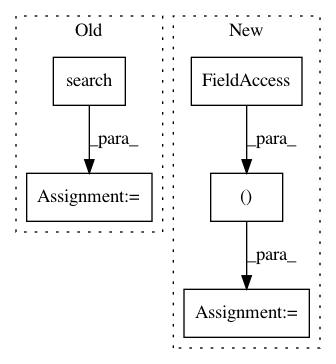

7a35274f88feaa629e3dc7840e1f40b56aa4db95,hls4ml/model/optimizer/passes/bn_quant.py,BatchNormalizationQuantizedTanh,initialize,#BatchNormalizationQuantizedTanh#,14
Before Change
inp = self.get_input_variable()
shape = inp.shape
dims = inp.dim_names
precision_bits = re.search(".+<(.+?)>", inp.type.precision).group(1).split(",")
if "int" in str(inp.type.precision):
W = int(precision_bits[0])
I = W
F = 0
After Change
shape = inp.shape
dims = inp.dim_names
precision = self.model.config.backend.convert_precision_string(inp.type.precision)
W, I, F = precision.width, precision.integer, precision.fractional
original_name = self.attributes.get("original_name")
variance = self.model.get_weights_data(original_name, "moving_variance")
mean = self.model.get_weights_data(original_name, "moving_mean")
gamma = self.model.get_weights_data(original_name, "gamma")
In pattern: SUPERPATTERN
Frequency: 3
Non-data size: 5
Instances
Project Name: hls-fpga-machine-learning/hls4ml
Commit Name: 7a35274f88feaa629e3dc7840e1f40b56aa4db95
Time: 2020-10-22
Author: sioni.summers10@imperial.ac.uk
File Name: hls4ml/model/optimizer/passes/bn_quant.py
Class Name: BatchNormalizationQuantizedTanh
Method Name: initialize
Project Name: jhfjhfj1/autokeras
Commit Name: d6e2975df0ccd9e585ace5e9f15ec3168a0b2b1d
Time: 2018-03-19
Author: jin@tamu.edu
File Name: autokeras/classifier.py
Class Name: ClassifierBase
Method Name: fit